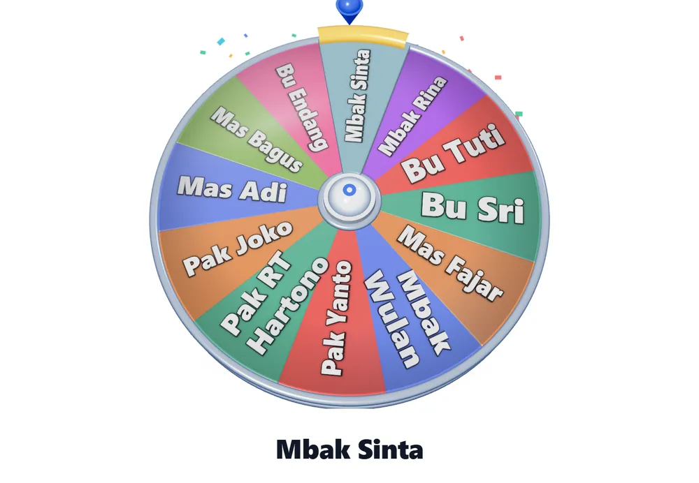

Beranda › Roda nama arisan
Roda nama arisan yang adil untuk arisan RT dan keluarga
Arisan hampir selalu berakhir dengan satu pertanyaan yang sama: “kok dia terus yang dapat?”. Bukan karena ada yang curang, biasanya karena kocokan manual — gulungan kertas di gelas, atau angka yang disebut bergantian — sulit dibuktikan adil di depan semua orang. Roda nama menyelesaikan itu: semua nama terlihat di roda, dan pemenangnya ditentukan alat, bukan orang yang memegang gelas.
Buka roda nama arisan tempel nama anggota, langsung putar
Kenapa arisan butuh pengundi yang terlihat adil
Arisan melibatkan uang dan kepercayaan. Ketika pemenang ditentukan dengan cara yang tidak terlihat, satu kecurigaan kecil bisa merusak pertemuan berikutnya. Roda nama menyimpan seluruh daftar anggota di layar, memutar semuanya bersamaan, lalu berhenti di satu nama. Semua orang melihat proses yang sama dari awal sampai akhir — itu yang membuat hasilnya sulit dibantah.

Cara memakai roda nama untuk arisan
- Kumpulkan nama anggota satu kali, satu nama per baris. Daftar tersimpan di perangkat, jadi pertemuan berikutnya tidak perlu mengetik ulang.
- Tampilkan roda ke semua peserta — lewat proyektor, laptop, atau HP yang dipegang bergiliran. Jangan diputar diam-diam di belakang.
- Tekan Putar dan biarkan roda berhenti sendiri. Jangan hentikan atau ulangi putaran karena hasilnya tidak sesuai harapan.
- Catat pemenang di buku arisan, lalu hapus namanya dari daftar untuk putaran berikutnya bila arisan berjalan bergilir.
Coba langsung di sini
Tempel nama anggota arisan Anda, lalu putar. Tidak perlu mendaftar dan tidak ada data yang dikirim ke server.
Alat di atas bisa dipakai langsung di halaman ini. Bila layar terasa sempit, buka di tab penuh.
Tiga aturan supaya tidak ada yang protes
- Putar di depan semua orang. Yang membuat roda dipercaya bukan angkanya, tapi kenyataan bahwa semua orang melihat prosesnya.
- Jangan mengulang putaran. Kalau hasil diulang sekali saja, hasil berikutnya kehilangan kredibilitas untuk seterusnya.
- Simpan daftar dan hasilnya. Tulis nama pemenang dan tanggal di buku arisan, sama seperti kuitansi setoran.
Arisan keluarga, RT, dan kantor: bedanya di jumlah anggota
| Jenis arisan | Biasanya | Cara pakai roda |
|---|---|---|
| Keluarga besar | 12–30 anggota | Putar sekali untuk satu pemenang per pertemuan |
| Arisan RT/RW | 20–60 anggota | Di atas 30 nama, bagi dua putaran |
| Arisan kantor | 8–20 anggota | Cukup di HP yang dipegang bergiliran |
| Arisan online | tersebar | Bagikan tautan roda, lalu satu orang memutar sambil layar dibagikan |
Untuk daftar di atas 30 nama — umumnya arisan RT/RW — roda tetap berjalan, tetapi tulisan nama mengecil. Bila dipakai di proyektor aula, bagi daftar menjadi dua putaran: nama yang sudah tampil di putaran pertama tidak perlu diulang.
Kalau anggota arisan bertambah di tengah periode
Tambahkan nama baru di baris berikutnya, lalu putar seperti biasa. Anggota yang sudah pernah mendapat tidak perlu dihapus bila arisan berjalan sebagai undian bebas; tetapi bila arisan bergilir — setiap orang dapat tepat satu kali — hapus nama pemenang setelah dicatat supaya tidak terpilih dua kali.
Menyimpan bukti hasil undian
Pengurus arisan sering ditanya: “bulan lalu siapa yang dapat?”. Kalau jawabannya hanya diingat, mudah lupa dan mudah dipersoalkan. Cara paling sederhana: setelah roda berhenti, tangkap layar dan simpan di album khusus arisan, lalu tulis tanggalnya di buku setoran. Bila arisan dikelola lewat grup WhatsApp, tangkapan layar itu bisa dikirim ke grup sehingga semua anggota memegang bukti yang sama.
Bila arisan bersistem giliran, keluarkan nama pemenang dari daftar setelah dicatat. Dengan begitu tidak ada anggota yang terpilih dua kali dalam satu periode, dan jumlah peserta di roda selalu sama dengan sisa giliran.
Pertanyaan yang sering diajukan
Apakah roda nama arisan ini benar-benar acak?
Ya. Pemenang dipilih dari angka acak peramban, bukan dari urutan nama di daftar. Tidak ada bobot dan tidak ada nama yang diistimewakan.
Apakah perlu internet untuk memutar roda?
Tidak, setelah halaman terbuka satu kali. Berkas roda tersimpan di peramban, sehingga pertemuan di rumah tanpa Wi-Fi tetap bisa memutar.
Berapa jumlah nama maksimal yang bisa dimasukkan?
Tidak ada batas keras. Di atas 20 nama, tulisan nama otomatis dikecilkan agar tetap terbaca; di atas 30 nama, pertimbangkan membagi putaran.
Apakah nama anggota arisan saya tersimpan di server?
Tidak. Daftar nama hanya disimpan di perangkat yang dipakai. Situs hanya menghitung jumlah kunjungan anonim, tanpa nama dan tanpa isi daftar.